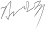

Home > 기업소개 > CEO 인사말
CEO 인사말
다비치 안경체인 대표이사 
차별화된 경쟁력의 눈건강 시력 지킴이
고객 만족을 넘어 고객감동의 시대로!
"체인점이 살아야 본사가 산다"는 상식적인 원칙을 실현해 보고자 2003년 (주)다비치 안경체인을 설립한지 10년여만에 저희 회사는 211여개의 대형 체인망을 갖춤으로서 전국민의 시력지킴이로서의 역할을 수행할 수 있게 되었습니다.
- 최고의 안경전문기업으로
- 앞으로 소수정예를 원칙으로 전국에 대형 연경전문매장 200여개를 갖춘
우리나라 최고의 안경전문기업으로 성장하고자 합니다.
또한 중국 시장을 비롯한 아시아 및 전 세계에 1000여개의 다비치 체인망을 거느린 명실상부한 세계 제일의 안경전문 기업이 되도록 최선을 다 할 것입니다.
- 고객 감동경영으로
- 주)다비치 안경체인은 유통 합리화를 통하여 안경 가격의 거품을 제거
함으로서, 좋은 품질의 제품을 합리적인 가격(정찰제)에 제공한다는
다비치 정신에 내재된 원칙에 입각하여 전문성 있는 안경사가 국민들의
건강한 시(視) 생활을 누릴 수 있도록 돕는 것을 기업의 사명으로
삼고 있습니다.
다양한 고객의 욕구를 만족시킬 뿐만 아니라 잠재된 고객의 needs를 발굴, 충족시킴으로서 고객의 만족을 넘어 고객 감동의 경영을 지향하고자 합니다.
- 다비치의 사회적 책임으로
- 또한, 기업이익의 사회 환원에도 힘써 노력하고자 합니다.
2012년 발족한 눈건강 시력 지킴이 봉사단 활동을 통해 우리 주변의
불우한 이웃들, 소외받은 계층을 찾아내어 건강한 시(視) 생활을
누릴 수있도록 다양한 방법을 통하여 지원토록 하겠습니다.
고객 여러분! 저희 다비치를 지켜봐 주십시오.
작지만 강한 회사, 고객에게 신뢰받는 다비치를 반드시 정립해 보이겠습니다.
그리고 세계적인 기업으로 우뚝 서겠습니다.
감사합니다.